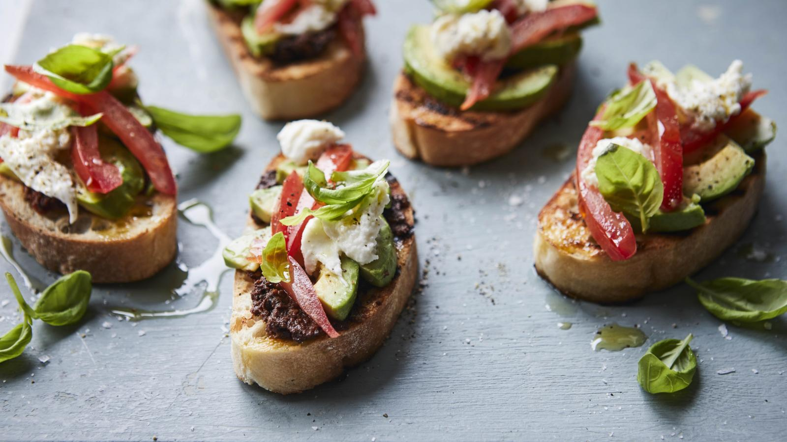

Tapenade

Description
Mary's new favourite lunch – quick and easy to make and oh so tasty. If your ciabatta loaf is long and narrow, cut it on the diagonal to give a larger surface area to hold all the topping.
For this recipe you need a mini food processor to make the tapenade.
Ingredients
- 70g/2½oz pitted black olives, drained if from a jar
- 3 tbsp sun-dried tomato paste
- 1 tsp runny honey
- 1½ tsp white wine vinegar
- 2 tbsp olive oil, plus extra for drizzling
- 1 garlic clove, crushed
- 6 thick slices ciabatta
- 1 tbsp fresh lemon juice
- 1 just-ripe avocado, flesh sliced into strips
- 2 ripe tomatoes, deseeded and sliced into strips
- 1 small bunch basil, leaves only, some torn and some left whole to garnish
- 200g/7oz buffalo mozzarella, torn into pieces
- salt and freshly ground black pepper
Steps
- For the tapenade, measure all the tapenade ingredients into a mini food processor. Pulse until well chopped and the mixture forms a rough paste. Season with salt and pepper and set aside.
- Heat a griddle pan or heavy-based frying pan until hot.
- Mix the oil and garlic together in a bowl. Brush the ciabatta slices with the garlic oil and then chargrill or pan-fry the bread for 2 minutes on each side until brown and crispy.
- Remove from the heat and spread the tapenade over the toasts.
- Drizzle the lemon juice over the avocado, then arrange on the toasts, followed by the tomato strips, torn basil and mozzarella. Season well with salt and freshly ground black pepper.
- Drizzle with extra oil before serving, and garnish with the whole basil leaves.